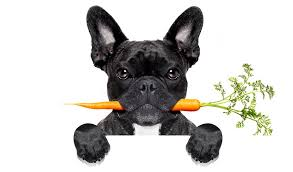
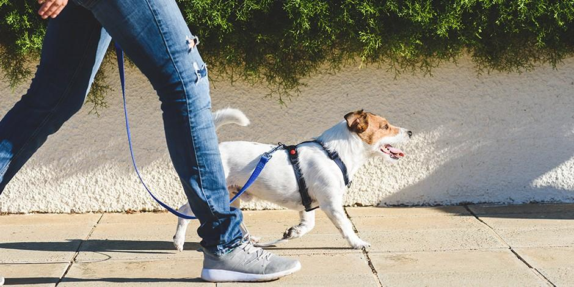

Perros
En los siguientes articulos encontraras informacion sobre....


ADULTO CUIDADO Y BIENESTAR PERRO
¿Cómo disfrazar a un perro y que se sienta cómodo?
Tu mascota puede disfrazarse. Aunque la sugerencia es acostumbrarlo a usar ropa poco a poco y nunca obligarlo
Leer mas
ADULTO CUIDADO Y BIENESTAR PERRO
Síntomas de envenenamiento en perros
Una de las peores sensaciones es la de saber que tu mejor amigo se ha enfermado o que está pasando por una situación que pone en gran peligro su vida.
Leer mas
 CUIDADO Y BIENESTAR PERRO
Perros con miedo a los truenos
CUIDADO Y BIENESTAR PERRO
Perros con miedo a los truenos
En temporada de lluvias y dependiendo de la zona en donde vivas, las condiciones climáticas podrían ser más o menos intensas, desde ligeros chubascos hasta el punto en que una intensa lluvia sea algo habitual.
Leer mas

CUIDADO Y BIENESTAR PERRO
¿Cómo pasear a un perro durante la nueva normalidad?
El cuidado de tu mascota debe mantenerse a pesar de las circunstancias que se lleguen a presentar, ya sea por temas personales o bien por circunstancias mayores como las que estamos viviendo..
Leer mas
ADULTO CAMBIOS EN MI MASCOTA PERRO
¿Qué hacer cuando los ladridos de perro aumentan en casa?
Los perros ladran para expresarse y hay situaciones en que esta conducta puede aumentar, como puede ser un periodo de aislamiento en casa.
Leer mas
ADULTO CUIDADO Y BIENESTAR PERRO
¿Cómo desinfectar los platos y cama de mi perro?
Mantener la salud de tu perro no sólo consiste en brindarle una alimentación adecuada, también requiere de otro tipo de hábitos que deberás compartir con él, por ejemplo, la limpieza
Leer mas
Tu mascota puede disfrazarse. Aunque la sugerencia es acostumbrarlo a usar ropa poco a poco y nunca obligarlo
Leer masUna de las peores sensaciones es la de saber que tu mejor amigo se ha enfermado o que está pasando por una situación que pone en gran peligro su vida.
Leer mas
CUIDADO Y BIENESTAR PERRO
Perros con miedo a los truenos
En temporada de lluvias y dependiendo de la zona en donde vivas, las condiciones climáticas podrían ser más o menos intensas, desde ligeros chubascos hasta el punto en que una intensa lluvia sea algo habitual.
Leer masEl cuidado de tu mascota debe mantenerse a pesar de las circunstancias que se lleguen a presentar, ya sea por temas personales o bien por circunstancias mayores como las que estamos viviendo..
Leer masLos perros ladran para expresarse y hay situaciones en que esta conducta puede aumentar, como puede ser un periodo de aislamiento en casa.
Leer masMantener la salud de tu perro no sólo consiste en brindarle una alimentación adecuada, también requiere de otro tipo de hábitos que deberás compartir con él, por ejemplo, la limpieza
Leer mas